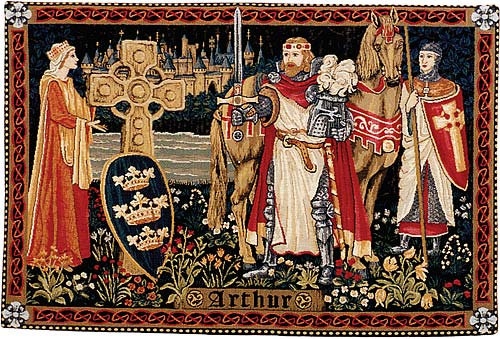

Small > Big
(and other stories)
Sam Boyer // @sdboyer
Let's talk about software
...by kinda not talking about software
Instead, three two one "story"
Small > Big
Imagine software that could be useful for a long time
so, what...5 years? 10? 50?
how about 1000 years?
what would THAT software look like?
what other systems have endured for that long?
why?
law!
our legal system comes from England, and evolved in the Middle Ages
they had some interesting problems
MURDER
also, land. but really, power.Wergild
or "man price"

blood feud is not very conducive to healthy society
Less sexy problem: people stealing each others' land
solution: writ of novel disseisin
functional: solving these problems is a means to an end
really, it's two things:
kingship
power
King Arthur
not about the thing you probably think it's about
the mythos of "good kingship"
WTF does this have to do with software
we can look at this as a systems modeling problem
how does the king acquire and keep power?
well, here's the basic recipe:
- publicly wrap yourself in the pervasive mythos
- actually do some of the legend, and posture around the rest
- PROFIT
but the devil's in the details
kingship mythos was very noisy
but in that, murder was the signal
MURDER: the right problem
- uh, murder sucks
- localized solutions were difficult
- it injects the king into day-to-day life
- the king is established as the decider
re: what violence is legal, or illegal
once murder (the ultimate violent act) was crown business, other violent acts were a fair game
in systems terms, it was generative. elegant, even.
LAND-THEFT: the (other) right problem
- it was an expedient solution, though hardly a good model
- but it "Just Worked," and damn, if that didn't 'drive adoption'
- abolished after more than 650 years, in 1833